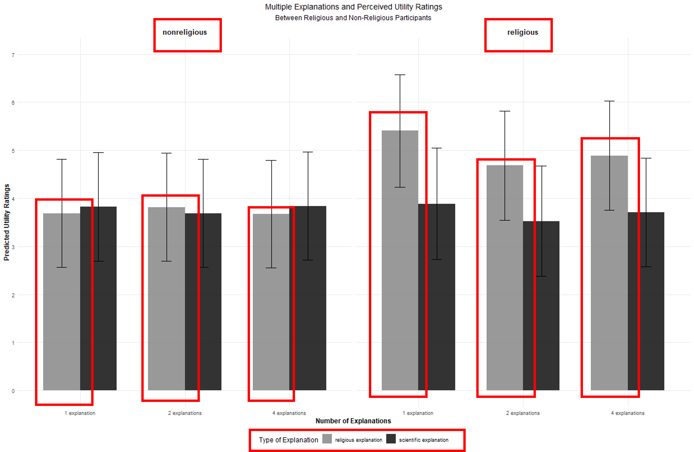

Menggunakan Penjelasan Ilmiah dan Agama
…dalam Kehidupan Sehari-Hari
Departemen Psikologi, Universitas Airlangga dan Research Data & Methods Team, CAIS
2026-01-29
Mana yang lebih meyakinkan?
Mana yang lebih meyakinkan?
Gangguan kesehatan mental terjadi akibat kombinasi faktor biologis (genetik, fungsi syaraf), psikologis (kepribadian, gaya penyelesaian masalah), dan risiko sosioekonomi (relasi interpersonal, trauma, kemiskinan). Pengobatan medis dan psikoterapi dapat membantu orang dengan gangguan kesehatan mental agar menjalani kehidupannya dengan optimal.
Gangguan kesehatan mental adalah ujian dari Tuhan YME yang dapat membuat kita lebih kuat secara spiritual. Kebanyakan orang dapat menemukan kedamaian dengan beribadah, mengingat Tuhan, dan yakin bahwa setiap kesulitan ada makna/tujuannya.
Penjelasan yang mana yang menurut Anda lebih meyakinkan atau bermanfaat?
Mana yang lebih meyakinkan?
Tip
Beberapa orang mungkin meyakini bahwa dua penjelasan tadi saling bertentangan, tetapi bagi yang lain, jawabannya bisa lebih rumit dari itu.
Disclaimer
Disclaimer
- Saya fokus menjawab pertanyaan psikologis, bukan teologis.
Disclaimer
Important
Pertanyaan teologis: “Apakah penjelasan agama dan saintifik kompatibel atau bertentangan?”
Disclaimer
Important
Pertanyaan teologis: “Apakah penjelasan agama dan saintifik kompatibel atau bertentangan?”
Important
Pertanyaan psikologis: “Bagaimana dan pada situasi seperti apa manusia menggunakan penjelasan agama dan saintifik?”
Disclaimer
- Saya fokus menjawab pertanyaan psikologis, bukan teologis.
- Saya tidak akan membahas koherensi, akurasi, atau truthfulness quality dari dua tipe penjelasan ini (natural/ilmiah vs. supranatural/agama).
- Tidak fokus pada ajaran/doktrin agama tertentu, tetapi penjelasan supranatural/agama yang sifatnya umum.
- Yang lebih menarik, apa arti dan konsekuensinya secara psikologis ketika seseorang menyatakan bahwa mereka percaya pada sains dan agama?
Testimoni atau observasi?
Apakah Anda masih ingat bagaimana Anda pertama kali belajar bahwa Tuhan dan oksigen, meskipun keduanya sama-sama tidak kasat mata, benar-benar ada?

Testimoni atau observasi?
- Banyak bukti menunjukkan bahwa kita mempelajari naive theories tentang entitas yang tidak dapat diamati (e.g., Tuhan, bakteri, malaikat, proses mental, dll.) terutama melalui testimoni.
- Artinya, kita belajar dengan mengkombinasikan pengalaman langsung and cultural input.
- Pengalaman langsung: pengamatan langsung yang tidak bergantung pada kesaksian/testimoni orang lain.
- Cultural input: Informasi yang diperoleh dari individu lain, baik secara lisan maupun simbolis.
- Testimoni hanya bekerja jika kita mempercayai sumbernya, jadi kepercayaan/trustworthiness di sini sangat penting dalam pemerolehan penjelasan ilmiah dan agama.
Testimoni atau observasi?
Tip
Untuk memperoleh penjelasan ilmiah, cultural input tidak terlalu penting, sehingga manusia umumnya lebih percaya diri dengan penjelasan ilmiah daripada penjelasan agama.
Kebutuhan psikologis yang sama
Selain diperoleh dengan cara yang sama, penjelasan ilmiah dan agama juga memenuhi kebutuhan psikologis yang serupa.
- Kebutuhan untuk menjelaskan sesuatu: Untuk memahami mengapa suatu peristiwa terjadi dan bagaimana sesuatu bekerja, dengan cara merumuskan sebab-akibat yang dapat membantu kita untuk memahami apa yang kita alami sehari-hari.

Kebutuhan psikologis yang sama
Selain diperoleh dengan cara yang sama, penjelasan ilmiah dan agama juga memenuhi kebutuhan psikologis yang serupa.
- Kebutuhan atas kendali/kontrol: Manusia membutuhkan agency/kendali atas kehidupannya dan penjelasan saintifik/agama memungkinkan hal tersebut.
Kebutuhan psikologis yang sama
Selain diperoleh dengan cara yang sama, penjelasan ilmiah dan agama juga memenuhi kebutuhan psikologis yang serupa.
- Kebutuhan makna hidup: Untuk menemukan tujuan dan makna atas eksistensi manusia.
Kebutuhan psikologis yang sama
Important
Jika penjelasan ilmiah dan agama diperoleh/dipelajari dengan cara yang serupa dan memenuhi kebutuhan psikologis yang sama persis, apakah itu berarti keduanya secara psikologis berkompetisi dalam proses mental kita?
Sekularisasi dan conceptual change
- Para ilmuwan mengajukan argumentasi bahwa “kompetisi” ini terjadi tidak hanya di level individual, tetapi juga di level institusional.
- Teori sekularisasi: ilmuwan sosial (e.g., Freud, Durkheim) telah memprediksi sejak lama bahwa institusi keagamaan akan kehilangan relevansinya seiring dengan laju industrialisasi.
- Conceptual change hypothesis: ketika anak-anak mulai belajar sains di sekolah, naive theories mereka, termasuk pengetahuan agama, akan tergantikan seluruhnya oleh ilmu pengetahuan.
Sekularisasi dan conceptual change
Warning
Jika kedua hipotesis ini benar, maka kita akan melihat berkurangnya pengaruh institusi keagamaan, seiring dengan kemajuan penelitian. Selain itu, individu akan kehilangan imannya sama sekali setelah mendapatkan pendidikan sains.
Data-data menunjukkan bahwa kedua pola ini memang terjadi, setidaknya sebagian.
Sekularisasi dan conceptual change
- Ada tren penurunan yang cukup tajam dalam partisipasi pada kegiatan keagamaan, terutama di negara-negara dengan laju industrialiasi yang cepat.
- Banyak bukti yang menunjukkan bahwa individu cenderung mempersepsi adanya konflik antara sains dan agama, setelah masuk ke pendidikan tinggi.
- Bukti-bukti dari studi-studi lintas budaya dan skala besar menunjukkan bahwa kemampuan berpikir kritis dan reflektif, yang merupakan pondasi perangai ilmiah, berhubungan erat dengan ketidakpercayaan terhadap Tuhan.
Sekularisasi dan conceptual change
Tetapi di sisi lain…
Agama tetap menjadi social force yang kuat yang memengaruhi keputusan individu. Banyak orang menganggap percaya pada Tuhan adalah hal yang esensial bagi seseorang untuk memiliki moral yang baik.
Meskipun ilmuwan biasanya cenderung tidak/kurang religius kalau dibandingkan dengan kebanyakan orang, banyak ilmuwan ternama juga merupakan pemeluk agama yang taat.
Orang-orang dari berbagai usia dan budaya ditemukan menggunakan penjelasan ilmiah dan agama secara bersamaan untuk menjelaskan berbagai fenomena, terlepas dari apakah mereka memiliki atau tanpa literasi sains. Dalam psikologi, fenomena ini disebut explanatory coexistence.
Keyakinan Agama: Defisiensi atau respon adaptif?
Warning
Kalau seandainya penjelasan ilmiah dan agama berkompetisi untuk memperebutkan mental resource kita, mengapa kedua penjelasan ini muncul secara bersamaan seperti yang ditunjukkan oleh riset-riset explanatory coexistence?
Beberapa orang berpendapat bahwa bertahannya keyakinan agama di hadapan penjelasan ilmiah menunjukkan adanya defisiensi pada kemampuan bernalar akibat proses belajar yang tidak tuntas. Namun, semakin banyak bukti menunjukkan bahwa hal ini disebabkan oleh fungsi penjelasan ilmiah dan agama yang memiliki fungsi yang berbeda.
Perbedaan fungsi
Penjelasan ilmmiah dan agama digunakan untuk tujuan yang berbeda, sehingga kita menggunakan processing rules yang berbeda ketika memproses keduanya secara psikologis.
Penjelasan ilmiah berguna untuk fungsi epistemik (‘to know’), sedangkan penjelasan agama digunakan untuk tujuan non-epistemik (e.g., moral, hubungan sosial, kekuasaan, status).
Penjelasan faktual/ilmiah terbentuk secara involuntary yang ditunjang oleh bukti dan dievaluasi berdasarkan akurasinya menggambarkan realitas. Sementara penjelasan agama diterima secara sukarela, sangat bergantung pada konteks, dan dievaluasi berdasarkan identitas dan nilai-nilai yang sifatnya normatif.
Kalaupun memerlukan bukti, penjelasan agama membutukan standar bukti yang lebih rendah daripada penjelasan ilmiah.
Beberapa Bukti Awal (Zein & Gollwitzer, 2025)
Kami melakukan sebuah eksperimen yang melibatkan 719 partisipan di Jerman, di mana para partisipan diberikan penjelasan ilmiah dan agama mengenai tiga krisis: banjir, krisis iklim, dan perang.
Partisipan kemudian menilai sejauh mana mereka merasa bahwa setiap penjelasan tersebut bermanfaat bagi mereka (utility ratings, 4 pernyataan, 1/sangat tidak setuju - 7/sangat setuju).
Partisipan juga mengisi skala religiusitas.
Beberapa Bukti Awal (Zein & Gollwitzer, 2025)
Contoh vignette
“Throughout history, human civilization has faced enormous collective adversity, including violent war. Millions of people have died, been displaced, and others have been indirectly affected by the devastating effects of violent war. “Why are there so many violent wars in the world?” you may ask. Below are plausible explanation(s) for the causes of violent war.”
Beberapa Bukti Awal (Zein & Gollwitzer, 2025)
Penjelasan 1:
Research on intergroup relations shows that collective memories of past conflicts, injustices, or humiliations can fuel war. When societies or groups focus on these historical grievances, they may seek revenge or retribution, perpetuating cycles of violence.
Penjelasan 2:
Although God teaches peace and reconciliation, He also allows wars as a means of restoring justice. People must be punished for some wrongdoings and are therefore allowed to punish each other. Therefore, war is something that is ultimately willed by God.
Beberapa Bukti Awal (Zein & Gollwitzer, 2025)

Beberapa Bukti Awal (Zein & Gollwitzer, 2025)
Apa artinya?
- Hanya utility ratings dari penjelasan agama yang berhubungan dengan religiusitas.
- Semakin religius, semakin tinggi utility ratings yang diberikan partisipan pada penjelasan agama.
- Utility ratings dari penjelasan ilmiah cenderung seragam, baik pada partisipan yang religius maupun yang tidak.
- Penjelasan ilmiah diterima secara universal, sedangkan penjelasan agama tidak (tergantung religiusitas).
- Hal ini menguatkan dugaan bahwa penjelasan saintifik dan religius diproses secara berbeda, sehingga dapat muncul/digunakan bersamaan (e.g., explanatory coexistence).
Kesimpulan
- Manusia dapat menggunakan penjelasan ilmiah dan agama secara bersamaan, karena…
- Kedua penjelasan ini berguna untuk tujuan yang berbeda.
- Manusia menerapkan processing rules yang berbeda ketika menggunakan penjelasan ilmiah dan agama.
- Oleh karena itu, penjelasan agama (religious/supernatural beliefs) tidak mungkin bisa digantikan seluruhnya oleh pengetahuan ilmiah dan tidak menghalangi/menghambat perangai/pemahaman ilmiah.
Terima kasih!
Akses presentasi ini dengan scan kode QR di bawah ini:

Tip
Kontak saya:
Email: amelia.zein@psikologi.unair.ac.id atau Amelia.Zein@cais-research.de
Website: https://rameliaz.github.io/
Discord: @rameliaz